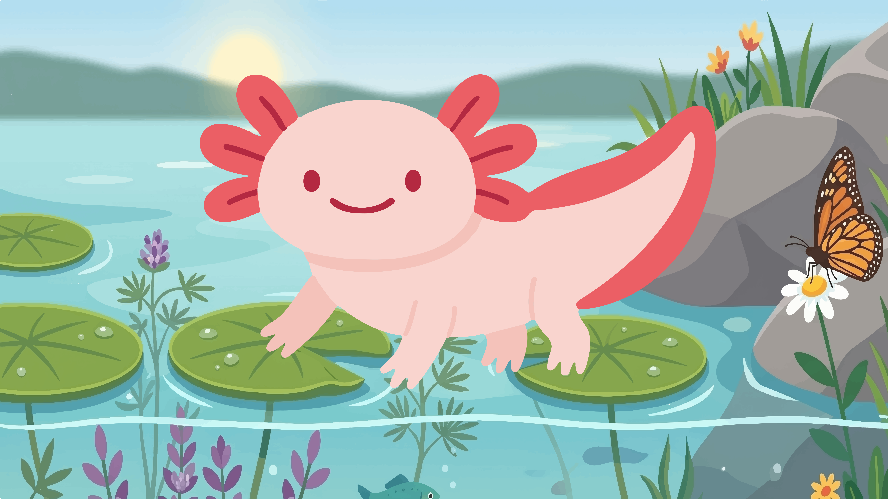
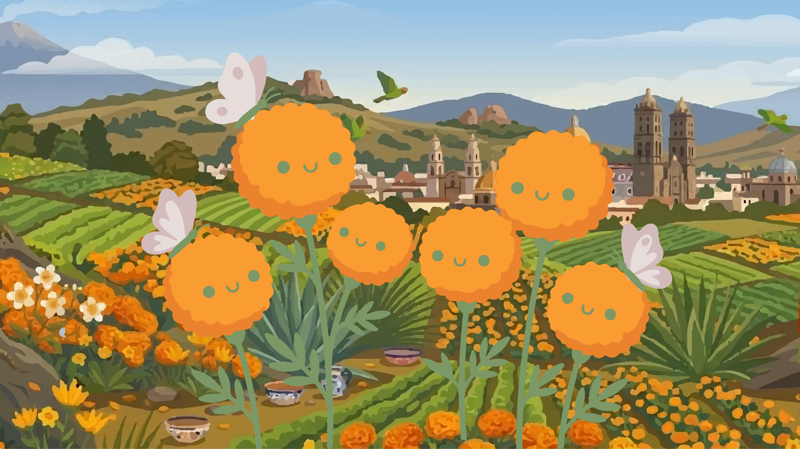
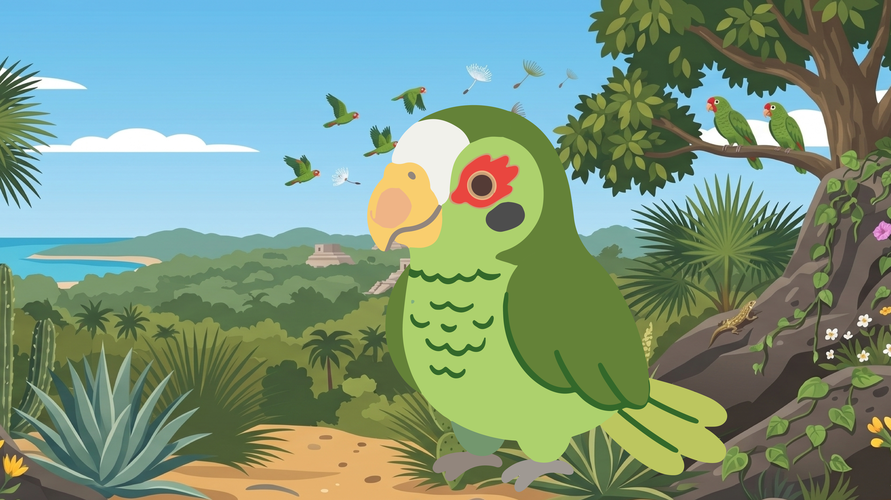
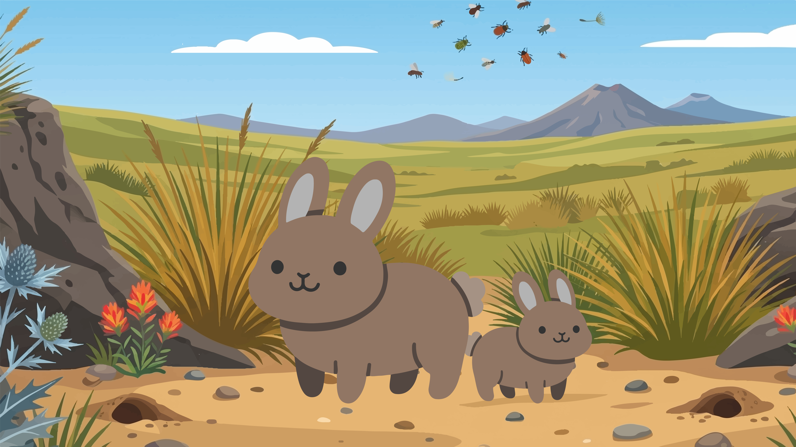
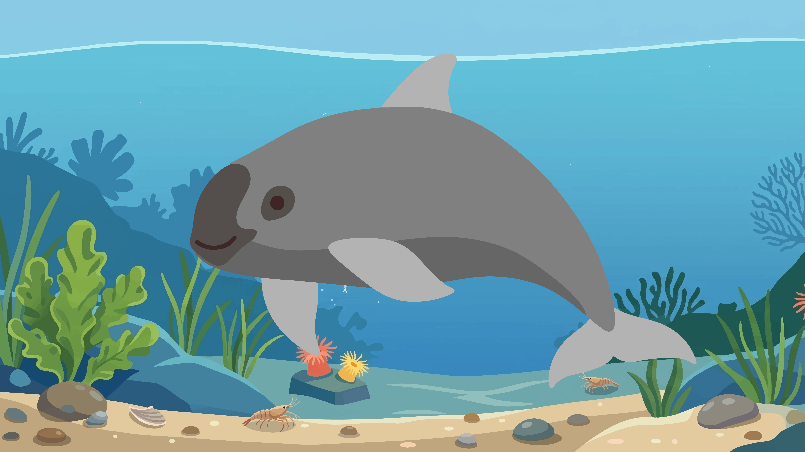

Especies Endémicas de México
México es un país megadiverso. Muchas de nuestras plantas y animales existen únicamente dentro del territorio nacional. Descubre aquí cinco especies emblemáticas, explora sus sonidos y conócelas en su entorno natural.

Ajolote Mexicano
Ambystoma mexicanum
Descripción
El ajolote es un anfíbio legendario famoso por sus asombrosas capacidades regenerativas y su estado de neotenia permanente, lo que significa que conserva sus rasgos de larva (como las branquias externas) durante toda su etapa adulta sin realizar metamorfosis.
Hábitat
Es 100% acuático y endémico exclusivamente del complejo sistema de canales y lagos de Xochimilco, en el sur de la Ciudad de México.
Estado de Conservación
En Peligro Crítico (CR)
Severamente amenazado debido a la contaminación del agua, la urbanización de su entorno y la introducción de especies de peces invasoras como la carpa y la tilapia.
Flor de Cempasúchil
Tagetes erecta
Descripción
Llamada la "flor de veinte pétalos" en náhuatl, destaca por su vibrante color amarillo-naranja y su aroma característico. Es un pilar botánico, medicinal y ceremonial imprescindible en el festejo de los fieles difuntos en México.
Hábitat
Se distribuye de manera silvestre en bosques templados y áreas perturbadas de México, y es ampliamente cultivada en regiones rurales de estados como Puebla y Michoacán.
Importancia Cultural
Valor Patrimonial
Sus pétalos se usan para trazar senderos y guiar a las almas de regreso a sus altares durante la noche del Día de Muertos.


Loro Yucateco
Amazona xantholora
Descripción
Es un perico pequeño y muy carismático. Luce un plumaje verde esmeralda, una corona de plumas amarillas y un antifaz de plumas de color rojo brillante alrededor de los ojos.
Hábitat
Habita en las selvas secas, matorrales y bosques semicaducifolios de la Península de Yucatán, extendiéndose ocasionalmente a regiones vecinas de Belice.
Estado de Conservación
Preocupación Menor (LC) / Bajo Presión
Aunque su clasificación global es estable, localmente sufre la pérdida de nidos por deforestación y la captura ilegal para comercio como mascota doméstica.
Teporingo
Romerolagus diazi
Descripción
Conocido como conejo de los volcanes o zacatuche, es un mamífero primitivo diminuto con extremidades cortas, orejas redondeadas muy pequeñas y una cola diminuta que apenas se nota.
Hábitat
Habita en bosques de pino a gran altitud, específicamente en los densos pastizales amacollados llamados "zacatonales", ubicados en los volcanes Popocatépetl, Iztaccíhuatl e Iztapopo.
Estado de Conservación
En Peligro de Extinción (EN)
La ganadería invasiva, el pastoreo inapropiado, la tala inmoderada y la caza furtiva fragmentan su pequeño hábitat alpino.


Vaquita Marina
Phocoena sinus
Descripción
Es el cetáceo (marsopa) más pequeño y amenazado del planeta. Se le reconoce fácilmente por las manchas oscuras circulares alrededor de sus ojos y la forma del contorno negro de su boca.
Hábitat
Exclusiva y endémica del Alto Golfo de California (Mar de Cortés), en el noroeste de México.
Estado de Conservación
En Peligro Crítico de Extinción (CR)
Al borde inmediato de la desaparición debido a que quedan muy pocos individuos silvestres. La principal amenaza es la pesca incidental en redes de enmalle clandestinas utilizadas para capturar al pez totoaba.